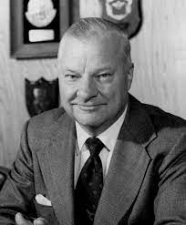

"Each piece of knowledge must have a single, monosemantic, reliable representation in the system"
Ways to combine code duplications
DRY is based on:
Advantages of the DRY usage
Is it always appropriate to use DRY?
similar code VS code with identical logic
Examples of the usage:
``` CSS
#twitter-icon {
width: 20px;
height: 20px;
}
#facebook-icon {
width: 20px;
height: 20px;
}
```
``` CSS
#twitter-icon,
#facebook-icon {
width: 20px;
height: 20px;
}
```
``` js
let apple = 'apple',
orange = 'orange',
banana = 'banana',
peach = 'peach';
apple.toUpperCase();
orange.toUpperCase();
banana.toUpperCase();
peach.toUpperCase();
```
``` js
const fruits = ['apple', 'orange', 'banana', 'peach'];
fruits.forEach(fruit => fruit.toUpperCase());
```
``` js
const monthNumber = Math.floor((Math.random() * 12) + 1);
if (monthNumber < 3 || monthNumber === 12) {
console.log("It is a winter month. Time to go skiing.");
} else if (monthNumber >= 3 && monthNumber < 6) {
console.log("It is a spring month. Time to skateboard.");
} else if (monthNumber >= 6 && monthNumber < 9) {
console.log("It is a summer month. Time to sunbathe on the beach.");
} else {
console.log("It is a autumn month. Time to drink hot chocolate.");
}
```
``` js
const monthNumber = Math.floor((Math.random() * 12) + 1);
const defineWhatItIsTimeFor = (timeOftheYear, action) => {
console.log(`It is a ${timeOftheYear} month. Time to ${action}.`);
}
if (monthNumber < 3 || monthNumber === 12) {
defineWhatIsItTimeFor("winter", "go skiing");
} else if (monthNumber >= 3 && monthNumber < 6) {
defineWhatIsItTimeFor("spring", "skateboard");
} else if (monthNumber >= 6 && monthNumber < 9) {
defineWhatIsItTimeFor("summer", "sunbathe on the beach");
} else {
defineWhatIsItTimeFor("autumn", "drink hot chocolate");
}
```
"Keep it simple, stupid "
"Keep it simple, silly"
"Keep it short and simple"
"Keep it simple and straightforward"
"Keep it small and simple"
Kelly Johnson
"Everything must be made as simple as possible, but not one bit simpler" Albert Einstein
Advantages of the KISS usage
Examples of the usage:
In design:
In development: